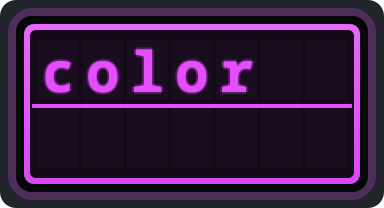
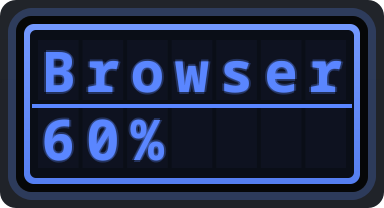
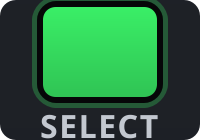

Channels, states and slots¶
This page decides what each of the 8 strips shows. Its four main parts build on each other:
- Channels are what a strip can control (an output, a group of applications, a person). You define them.
- Each strip of the X-Touch has a slot in the file, numbered 1 to 8 from the left, with a list of candidates: the channels it can show, best first.
- States (in a call, gaming) are on or off. A condition in the list asks about them.
- Controls add buttons, fader or encoder actions to a slot.
All of it goes into the configuration file. A slot changes only when what it shows changes; the others stay as they are, and a strip you are touching keeps what it shows until you let go. The design has every detail.
xtouch-daemon init-config writes a small example file. xtouch-daemon check-config shows
a table of what each slot shows in which states, and xtouch-daemon why 3 why slot 3 shows what it shows now.
xtouch-daemon list-devices prints the names for device of an output or input channel.
Channels¶
A channel is something a strip controls, with the options of its type (see Channels):
[channel.out]
type = "output" # or "input": an output (your headphones); see Channels for choices and the default
label = "Speaker"
[channel.voip]
type = "apps" # the streams of a group of applications
match = ["@voip"]
label = "VoIP"
[channel.ann]
type = "person" # someone of the voice chat, see People
person = ["Ann", "ann-phone"] # names of the same person in the voice chat
[channel.lamp]
type = "homeassistant" # a strip of Home Assistant automations (needs [mqtt])
The id (out, voip) names the channel in slots, conditions and the entities in Home Assistant.
Slots¶
[slots]
1 = "out" # always the output
2 = ["voip if call", "auto"] # the voice chat in a call, else the next application
3 = ["game if gaming", "-"] # the game in the mode gaming, else dark
4 = [{ show = "auto", color = "blue" }] # options of the place
5 = ["people", "apps"] # a person of the voice chat, else the next application
- A slot shows the first candidate whose condition (after
if) holds. Conditions name states and modes, withand,or,not, parentheses andpresent(the channel has something to control); see Conditions. apps,people,autoanddevicesare pools: not channels that you define, but suppliers of members (an application, a person, an output or input). See the table below.- A slot without an entry is
auto. So is a slot whose candidates all don't hold. -is nothing: the slot is dark.- The table form
{ show = ..., when = ..., ... }takes options of the look at this place, see Places. - The GUI's page Slots simulates other modes and states (Simulate), in the drawing or on the X-Touch.
xtouch-daemon why 2says why slot 2 shows what it shows,xtouch-daemon why voipwhere the channel is and why.- When a slot shows something else, its LCD flashes the new label and why (
gaming,not call) forswitching.bannerseconds.
Four pools are built in. Each strip that names a pool shows one member of it, so one pool can fill several strips:
| Pool | Members | Options |
|---|---|---|
apps |
Applications, see Applications. | [pool.apps]: from, hold and exclude. |
people |
The people of the voice chat, see People. | [pool.people]: from, order and the look of the strips of people. |
auto |
Both: the people first, from the right, and the applications from the left. | [pool.auto]: the look (color, meters, LEDs) of the applications on auto slots. |
devices |
The outputs and inputs no channel has, see Devices. | [pool.devices]: from, hold, exclude and the look of the strips of outputs and inputs. |
Which one to use: auto when you do not care, apps when only applications should appear (people would waste a
strip), people for the voice chat alone, devices for outputs and inputs without a channel.
A pool that has no member for a slot hands it to the candidate right below it, a pool or -: ["people", "apps"] is
a person for as long as there is one, else an application. When two pools could fill the same slot, the one listed
higher in the slot wins it.
Places¶
A candidate in the table form ({ show = "auto", color = "blue" }) takes options of the look at this place. The
built-in pools ([pool.apps], [pool.auto], [pool.devices], [pool.people]) take the same for all their places.
| Candidate | Options |
|---|---|
| a channel | color, lit_when_idle (keep the LCD lit while the strip has nothing to control), rec, solo (what the LEDs of these buttons show), meter, meter_point, label |
apps, auto |
color, lit_when_idle, rec, solo, meter, meter_point (no label: the strip shows the application's name), and encoder, min_volume, max_volume |
devices |
those of apps, and select = false (Select does not make the output the default) |
people |
color, meter, meter_point |
| a pool of channels | none: each channel brings its own look |
rec and solo at a place set what the LED shows; what a press does stays the channel's. encoder of apps and auto is pick by default: the encoder picks which application the strip shows (see Encoders).
Three levels decide what the parts of a strip do and show. The more specific one wins: a value at a place beats the
same option on the channel, for that slot. A plain value is a word or number like color = "red". A
binding takes the value from a program or from Home Assistant, e.g. { watch = "my-script" }:
| Level | Decides | Takes |
|---|---|---|
The channel ([channel.out], or the pool) |
What each part does and how it looks, in every slot. | Plain values and bindings. |
| The place | The look of what it shows, in this slot only. | Plain values only (e.g. color = "red", meter = false), no bindings. |
[controls] |
Parts of the slot, whatever it shows, while its when holds. |
Plain values and bindings for the slot. |
Home Assistant and launching
A control for Home Assistant, or one that starts an application ({ launch = [...] }), is a control of the slot,
not a place option: [controls]. How to start an application with Select:
Launching the application.
Pools of channels¶
A pool of your own hands out channels. Its list holds channels. The first channel of the list that is present (it has something to control) goes to the first slot that names the pool, the next present channel to the next such slot, and so on. Use it for things of which only some are there at a time, e.g. several outputs:
[channel.speaker]
type = "output"
device = "alsa_output.pci-0000_11_00.4.analog-stereo"
[channel.phones]
type = "output"
device = "alsa_output.usb-headset*"
tags = ["outs"]
[channel.buds]
type = "output"
device = "bluez_output.*"
tags = ["outs"]
[pool.outs]
channels = ["speaker", "#outs"] # channel ids, or "#tag" for every channel with that tag
from = "left" # the side it fills its slots from (default)
[slots]
1 = "outs"
2 = "outs"
- A channel of the list that a slot of its own shows (
3 = "buds") is not handed out by the pool. - Unlike
apps, a pool of channels fills by its order every time: when an earlier channel of the list comes back, the channels after it move one slot on. For channels that should keep their strip, give each a slot of its own (["buds if present", "auto"]). - A pool of channels goes above the built-in pools in a stack:
["outs", "auto"], not["auto", "outs"]. - It has no look of its own: its channels bring theirs.
Pools of applications and of people¶
kind makes a pool of your own hand out members instead of channels: kind = "apps" the applications that play and
match, kind = "people" listed people of the voice chat, each on a strip of its own. Use them to split what apps and
people hand out in one piece:
[pool.music]
kind = "apps"
match = ["@music"] # parts of names or program files, and presets, as in an `apps` channel
exclude = ["spotify-ads"] # optional: never these, though they match
from = "left" # the side it fills its slots from (default)
hold = 5 # seconds a slot keeps an application after it stopped (default)
color = "green" # the look of its strips
[pool.friends]
kind = "people"
people = ["Alice", "Bob"] # names in the voice chat; this is their order
from = "right" # the default of a pool of people
talking_color = "green"
[slots]
5 = ["music", "apps"] # a music player if one plays, else the next other application
6 = "apps"
7 = ["friends", "people"] # the first of Alice and Bob who is in the call, else anyone else in the call
8 = ["friends", "people"] # the second of them, else anyone else in the call
| Option | kind = "apps" |
kind = "people" |
|---|---|---|
match |
Required. | Not allowed. |
exclude |
Optional. | Not allowed. |
people |
Not allowed. | Required: names as in person of a channel, ignoring case. |
from |
left |
right |
hold |
Seconds, default 5. | Not allowed: as with channels, a person stays absent_after seconds (default 3) after they left. |
| Look | color, meter, meter_point, rec, solo, lit_when_idle, min_volume, max_volume. The encoder can be media, volume or balance, but not pick (that picks among the applications of apps and auto). |
color, meter, meter_point, rec, solo, lit_when_idle, talking_color. |
- A pool of your own takes its members first: a music player goes to
music, not toappsorauto. Anappschannel or apersonchannel that has a slot keeps its application or person. - It takes them only while a slot names it, in any stack. A pool that no slot names takes nothing, so a forgotten
[pool.music]can't make the players disappear from the strips;check-configsays "pool music is on no slot". - A member that finds no slot waits in its pool. In this example there are two slots for
friends. With a third friend, that friend has no strip until a slot offriendsis free, and does not move on topeople. - Like
apps, an application keeps its slot while it plays; a pool of people fills by the order of its list. - Several pools share a slot as candidates:
["friends", "music", "auto"]. A pool aboveautoor another pool wins a slot that both could fill; a slot a pool has no member for goes to the candidate below it.
States and modes¶
[state.call]
voice_chat = true # in a channel of the voice chat (needs a voice chat provider, see People)
recording = ["discord"] # or: Discord records
delay_off = 5
[state.gaming]
mode = true # one mode at a time; without one, "default"
label = "Gaming" # the banner across the LCDs
processes = ["@steam-games"]
- Sources
- A state is on while any of its sources is:
apps(playing),recording,voice_chat,processes,devices,channels,homeassistant(a switch in Home Assistant), orwhen(a condition of other states). - Delays
delay_on(default 0) anddelay_off(default 3 seconds, 10 for a mode) smooth it: the state goes on only after its sources were on that long, and off only after they were off that long. A state withwhenhas no delays by default (both 0): it follows the states it names, which have theirs already; a delay you give it comes on top of the delays of the states it names.- Modes
- Modes are states with
mode = true: the one with the highestprioritywhose sources are on is the mode, elsedefault. When the mode changes, the LCDs show itslabelacross the strips forswitching.bannerseconds.
apps and processes take parts of names, ignoring case, and presets.
Games from Steam and Proton
processes = ["@steam-games"] is on while any game runs, native or with Proton: Steam starts every game through
its reaper process, which is what the preset stands for. Proton games play as <Game>.exe (e.g. "Planet
Crafter.exe"), which apps = ["@games"] catches once they make a sound.
Don't use steam (the client runs all the time) or .exe in processes (Wine's helpers, like explorer.exe,
run for other Windows programs too).
ps -eo comm,args while a game runs shows the names to use for others. Kernel threads don't count.
Every state can be overridden (on, off, auto) from Home Assistant, the GUI's live view or a button; auto
means the sources decide again. An override lasts until the sources of the state turn it on or off by themselves
(persist = true: until you set it back). A mode picked by hand
(xtouch-daemon mode gaming, the chord, Home Assistant) lasts until the sources of the modes would pick
another one.
Conditions¶
A condition says when something applies: a candidate of a slot (after if, or when in the table form), a state
(when) or controls (when). It holds or not at any moment, and the slot follows at once. All the parts in the
table work in all three places, except present and present(...), which only candidates of slots may use.
| Part | Holds while | Example |
|---|---|---|
| a state or mode | it is on | call, gaming |
default |
no other mode is on | default |
present |
the channel or pool of the candidate has something to control | browser if present |
present(<channel or pool>) |
that channel or pool has something to control | present(game) |
not <part> |
the part does not hold | not call |
<part> and <part> |
both hold | call and not gaming |
<part> or <part> |
either holds | call or present(voip) |
( ... ) |
what is inside holds | (call or gaming) and present |
notbinds closest, thenand, thenor:not call and gaming or presentis((not call) and gaming) or present. Parentheses say otherwise.- The words are lowercase, names are those of the file (
[state.<name>],[channel.<name>],[pool.<name>]), and the built-in poolsapps,people,autoanddevices. - A candidate without a condition always holds, so the candidates below it never show. The exception is a pool: when
a pool has no member for a slot, the slot goes on to the candidate below it, which can be another pool or
-. - Present means it has something to control: an
appschannel while its application plays, anoutputorinputchannel while one of itsdevicesis there (always withoutdevices), apersonchannel while the person is in the voice chat, ahomeassistantchannel always. A channel stays presentabsent_afterseconds (3 by default) after that ended.appsis present while an application it may take plays,peoplewhile someone is in the voice chat,autowhile either is,deviceswhile an output or input no channel has is there, another pool while one of its channels is present. presentis only for candidates of slots. A state asks about channels with itschannelssource, and controls apply whatever the slot shows, sopresentwould have no meaning there.check-configand the GUI name the mistakes: an unknown state, mode, channel or pool, a word where none fits, a condition that ends too early. The GUI underlines them in the field When.
[slots]
2 = ["browser if present", "auto"] # the browser while it plays, else the next application
7 = ["voip if call and not gaming", "auto"] # the voice chat in a call, but not while gaming
8 = ["game if gaming or present(game)", "-"] # the game in the mode gaming or while it plays
Controls and the chord¶
[controls] claims parts of a slot, whatever the slot shows. To claim a part means to take it over: while when
holds, the part does what the claim says instead of what the shown channel does.
[controls]
2 = { select = { launch = ["mumble"] }, when = "not call" } # Select starts Mumble while not in a call
5 = { select = "toggle:call", solo = "mode:gaming" }
6 = { fader = "homeassistant", id = "desk" } # the fader is number.xtouch_desk_fader
when takes a condition of states and modes: the controls apply while it holds. Actions:
homeassistant, cycle_modes, mode:<id>, toggle:<state or mode>, and these tables:
{ launch = [...] }starts an application (see Launching the application).{ run = [...] }starts a program of your own and waits for it to end. Write the program and its arguments as a list, or as one string that is split at the spaces:run = ["notify-send", "hi"]orrun = "notify-send hi". No shell runs it.{ service = "...", entity = "..." }calls a service of Home Assistant (needs[homeassistant]).
A fader or an encoder takes one of these:
homeassistant: a number entity in Home Assistant.- The value of a custom channel:
7 = { encoder = { channel = "screen_left" } }makes the encoder of slot 7 set the value thatscreen_leftcontrols. For a fader, the channel must have afaderthat is a value. For an encoder, the claim uses theencoderof the channel, else the value of itsfader. A channel withtargetsmakes the claim follow the target the channel controls. - A value of its own, as in Bindings:
{ set, watch, min, max, step, push, format }. A fader has nopush. - A value of an entity of Home Assistant:
{ entity, attribute, min, max, step, push, format, service, data }, see An entity of Home Assistant. Needs[homeassistant].
The slot keeps showing what it shows, and the LED ring shows the value. {value} in a run is the
value of the fader of the controls, else of their encoder. It needs one of them to be a value or a { channel }.
Until the value is known, the program does not run; the log says so.
[controls]
7 = { encoder = { set = "brightnessctl set {value}%", min = 1, max = 100 }, solo = { run = "notify-send {value}" } }
[controls] can also claim what a slot shows: the meter, the color, the second line of the LCD and the LEDs of
Select, Rec and Solo. They take the same bindings as on a channel:
| Part | Takes |
|---|---|
 meter |
homeassistant (number.<ns>_<id>_meter, 0..100), { watch, min, max } or { poll, every, min, max }: the number a program prints, or { entity, attribute, min, max }: the number of an entity. |
 color |
A color, homeassistant (select.<ns>_<id>_color), { watch } or { poll, every }: the color a program prints, or { entity, attribute }: the color of an entity. |
 lcd |
homeassistant (text.<ns>_<id>_bottom), { watch } or { poll, every }: the newest line a program prints, or { entity, attribute }: an entity. |
 select, rec, solo |
An action as above, or a table { press = <action>, led = <LED> }. |
<id> is the id of the controls, else slot_<n>. <ns> is namespace of [mqtt] (xtouch by default).
A button (select, rec, solo) takes an action, or a table with two keys, press (what a press does) and led
(what the LED shows). Either key can be left out:
ledalone claims the LED only. A press still does what the slot would do without the claim.pressalone is the same as writing the action without a table. The LED shows what the press does.
led takes one of these:
off.press: lit as the press says.homeassistant: the entityselect.<ns>_<id>_<button>_led.{ watch }or{ poll, every }: a program prints a line.on,1,trueoryeslights the LED,flashflashes it.{ entity, attribute }: lit while the entity ison,open,playingorhome.
[controls]
8 = { meter = { watch = "/home/me/bin/cpu-load" }, rec = { led = { poll = "/home/me/bin/syncthing-running", every = 5 } } }
3 = { color = "red", lcd = { poll = "date +%H:%M", every = 10 }, when = "call" }
4 = { encoder = { entity = "media_player.kitchen" }, solo = { service = "media_player.media_play_pause", entity = "media_player.kitchen" } }
What the three lines do:
- Slot 8: the meter shows the CPU load, and the Rec LED is lit while Syncthing runs, whatever the slot shows. Both are
scripts of your own:
cpu-loadprints a number,syncthing-runningprintsonwhile Syncthing runs (see Bindings and what the LED shows). - Slot 3: during a call, the strip is red and its LCD shows the time.
- Slot 4: the encoder sets the volume of the kitchen speaker in Home Assistant, and Solo plays or pauses it. A press of Rec still does what the slot does.
How a claim behaves:
- While
whenholds, a claimed part shows the claim. After that, the slot shows its own part again. - The watches and polls run for as long as the configuration, so a claim that comes back shows their newest lines at once. Until the first line, a color is white, a line is empty, an LED is dark and the meter rests.
- Places take no bindings: a binding for the slot, whatever it shows, belongs here.
- On the slots of the chord,
[controls]can claim the LED of Solo, but not its press.
The section [switching] has two options. The chord is a way to change the mode from the X-Touch. The banner is the
text on the LCDs when a mode changes:
Option of [switching] |
Default | Meaning |
|---|---|---|
chord |
[1, 8] |
The slots (from 1 on the left) whose Solo buttons, held together, cycle the modes; [] for no chord. chord = { strips = [1, 8], action = "toggle:call" } does another action. |
banner |
1.5 |
Seconds the LCDs show the label of a new mode, and a slot that shows something else its new label and why; 0 for none. |
Home Assistant¶
With [mqtt]: select.xtouch_mode, a binary sensor per state (with since,
source and override), an override select per state that is no mode, an input switch per state with homeassistant = true,
binary_sensor.xtouch_<channel>_shown, and sensor.xtouch_slot_<n> (what the slot shows, with label, kind, via
and reason). See Home Assistant.
Next: Devices, Applications and People say what each channel type takes; Presets the @ names.